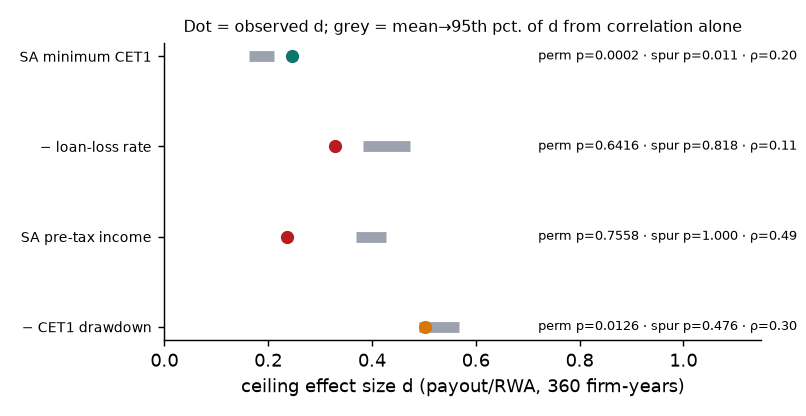
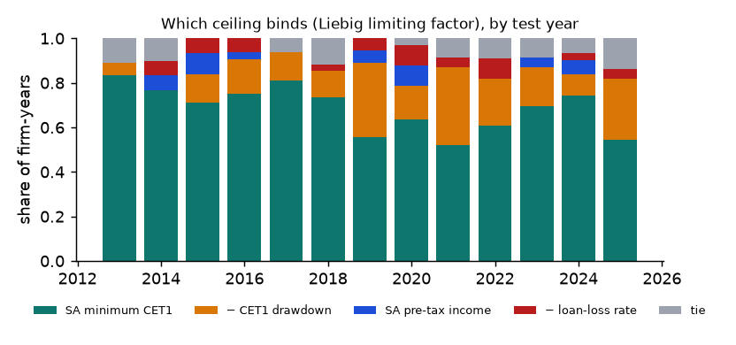
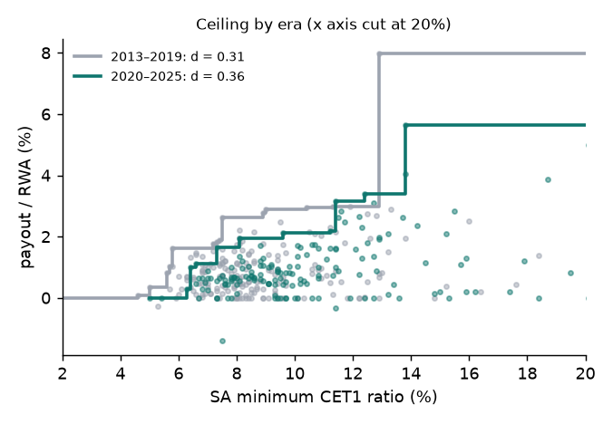
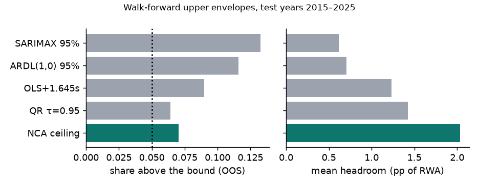

Necessary Condition Analysis (NCA ceilings) · from organization science, with roots in agronomy boundary lines (necessary-but-not-sufficient analysis)
Does a weak stress result cap what a bank pays out?
What it isFits a ceiling on the scatter (no high outcome without enough of the condition) and measures the empty corner above it.
VerdictInteresting. Home field: contested (standard test cannot tell a ceiling from a correlation).
Top pickMath (effort M): Noise-robust isotonic-quantile ceiling tested against tail-dependent copula nulls with firm blocks, so no single firm sets the gate.
👍 go ahead · 👎 drop · or just comment what you think
Notation
Symbol
Meaning
Here
\(x_k,\ y_k\)
condition and outcome of case \(k\)
firm-year in a severely adverse test: \(x\) = a stress result oriented so higher = better (minimum stressed CET1 ratio, minus drawdown, pre-tax income, minus loan-loss rate, minus SCB); \(y\) = Y-9C payout/RWA (%)
\(c(x)\)
ceiling: the highest outcome observed at or below condition level \(x\)
the most any firm with a stressed CET1 trough of at most \(x\) paid out
scope \(S\)
\((x_{\max}-x_{\min})(y_{\max}-y_{\min})\)
the box spanned by the data
\(d\)
necessity effect size = empty area above the ceiling / scope
0 = no empty corner; 0.1–0.3 "medium", 0.3–0.5 "large" by Dul's rule of thumb
bottleneck \(x^{*}(y)\)
smallest \(x\) with \(c(x)\ge y\)
"to pay at least \(y\)% of RWA, no firm had a trough below \(x^{*}\)%"
\(\rho_s\)
Spearman correlation of \(x\) and \(y\)
used to build the "correlation alone" null
Assumptions
A necessity claim is "no high \(y\) without high \(x\)"; it is about the upper-left corner of the scatter, not the mean.
CE-FDH (ceiling envelopment, free disposal hull) assumes the ceiling is non-decreasing and treats every observed point as feasible, so the ceiling is set by the best performers and is sensitive to outliers and measurement error in the top cases.
Effect size depends on the scope, so extreme \(x\) values at the right edge (firms with very high CET1) enlarge or shrink \(d\).
For the permutation tests: under the null, outcomes are exchangeable across firms (within a test year, for ours).
Because \(c\) is a step function, the integral is a finite sum over the distinct \(x\) values \(u_1<\dots
Why it works, step by step
Step 1 · necessity leaves an empty cornerIf \(y\le h(x)\) for some non-decreasing \(h\) (a "law of the minimum": the outcome cannot exceed what the condition allows), then no case lies above \(h\), and the area between \(h\) and \(y_{\max}\) is empty. The tightest non-decreasing envelope of the data is exactly \(c(x)=\max\{y_k:x_k\le x\}\): it is non-decreasing by construction (a running maximum), it lies on or above every point, and any lower non-decreasing curve would cut off a point. So \(c\) estimates \(h\) from below and \(d\) measures the empty corner.
Step 2 · but correlation also empties the cornerFor a bivariate normal pair with correlation \(r>0\), the density in the upper-left (\(x\) low, \(y\) high) falls as \(\exp\{-(x^2-2rxy+y^2)/(2(1-r^2))\}\); at \(x=-a,\ y=a\) the exponent is \(-a^2(1+r)/(1-r)\), which shrinks as \(r\) grows. With finite \(n\), the expected largest \(y\) among cases with low \(x\) is lower than \(y_{\max}\), so \(d>0\) even with no ceiling mechanism. Sorjonen & Melin's "range of spuriousness" makes this the null: simulate data with the observed marginals and observed \(\rho_s\) and no ceiling, and ask whether the observed \(d\) is larger than that.
Step 3 · Liebig's limiting factorWith several conditions, each has a ceiling \(c_j\). Under the law of the minimum, \(y\le\min_j c_j(x_j)\), and the condition attaining the minimum for a case is its limiting factor (as in boundary-line yield-gap analysis in agronomy). The share of cases each condition limits says which constraint binds, which no single regression coefficient expresses.
The null and inference
Standard NCA test (Dul, van der Laan & Kuik 2020): permute \(y\) against \(x\) and compare \(d\) (approximate permutation test; 10,000 in the R package). It tests "\(x\) and \(y\) unrelated", so any correlation can reject it.
Within-year permutation (ours, 4,999): shuffle payouts across firms within each test year, which respects year-level payout regimes.
Range of spuriousness (Sorjonen & Melin, as described in the 2026 Frontiers comment): Gaussian copula at \(r=2\sin(\pi\rho_s/6)\) with the observed marginals (ranks mapped to sorted observed values), 1,999 simulations; the observed \(d\) must exceed the 95th percentile. Pre-registered finding: \(d\ge0.10\), within-year p < 0.05 and above the spuriousness 95th percentile.
Four conditions × four outcomes are reported; the main claim uses payout/RWA and is backed by its two components separately.
Toy example (computed by cards/_toys/toys.py)
Six firm-years, \(x\) = minimum stressed CET1 (%) = 5, 6, 7, 8, 9, 10 and \(y\) = payout/RWA (%) = 0.4, 0.2, 1.0, 0.6, 1.5, 0.9. Ceiling (running max): 0.4, 0.4, 1.0, 1.0, 1.5, 1.5. Empty zone = (1.5−0.4)·1 + (1.5−0.4)·1 + (1.5−1.0)·1 + (1.5−1.0)·1 + 0 = 3.2; scope = (10−5)(1.5−0.2) = 6.5; \(d=3.2/6.5=0.492\). Bottlenecks: paying at least 0.5% or 1.0% needed \(x\ge7\); paying 1.5% needed \(x\ge9\). Pearson \(r=0.686\) summarizes the same six points as "fairly correlated" and says nothing about the empty corner.
How it differs from the standard tool. OLS and quantile regression model \(E[y\mid x]\) or a quantile as a line through the cloud; they average over firms that are and are not constrained. NCA models only the frontier: the maximum attainable \(y\) at each \(x\), with no functional form, no error distribution and no averaging. A weak correlation can coexist with a hard ceiling (many unconstrained firms pay little for their own reasons), and a strong correlation can exist with no ceiling (the mean moves, the cap does not). Its weakness is the flip side: a frontier set by a handful of extreme cases, and a default test that cannot tell a ceiling from a correlation.
Followed: Dul (2016), "Necessary Condition Analysis (NCA): logic and methodology of 'necessary but not sufficient' causality", Organizational Research Methods 19(1):10–52 (cited by the package and the quick-start guide; not read; CE-FDH and effect-size definitions taken from the NCA 5.1.0 package code and the quick-start guide, and checked by our port); Dul, van der Laan & Kuik (2020), ORM 23(2):385–395 (abstract and test description read on the publisher page). Range of spuriousness: Sorjonen & Melin (2025), as described in the 2026 Frontiers in Psychology comment (read); original not read, so our Gaussian-copula version is our implementation of that description. Section and equation numbers not checked. Toy: cards/_toys/toys.py.
What we found
Observed d vs what correlation alone gives

Ceiling on the trough
Finding 1
The stressed CET1 trough caps payouts beyond what correlation explains.
360 firm-years: CE-FDH ceiling of payout/RWA on the SA minimum CET1 ratio, d = 0.245; within-year permutation p = 0.0002 (NCA package p = 0.0009); Gaussian-copula range of spuriousness at the observed ρ = 0.20: mean 0.16, 95th percentile 0.21, p = 0.012. Next-year payouts d = 0.38 (p = 0.0045). Dividends/RWA d = 0.43 (p = 0.016), net buybacks/RWA d = 0.24 (p = 0.011) although their rank correlation is 0.02. OLS on payouts: R² 0.10.
Pre-registered finding (d ≥ 0.10, within-year p < 0.05, above the spuriousness 95th percentile) met for all four outcomes.
Finding 2
The drawdown passes the standard NCA test, but only through correlation.
Minus CET1 drawdown: d = 0.50, standard permutation p = 0.010 (package), within-year 0.013 — the usual reading is "necessary". But data with the same marginals and correlation (ρ = 0.30) and no ceiling give d of 0.49 on average (95th percentile 0.57; p = 0.48). On our data shape, the standard test calls such correlated-only data "necessary" in 73.5% of 200 simulations.
Computed. This is the Sorjonen–Melin critique reproduced on bank data. The rejection rate is 3% at ρ = 0, 15% at 0.1, 38% at 0.2.
Finding 3
Pre-tax income moves the average payout, not the cap.
SA pre-tax income: OLS R² 0.16, quantile regression slopes at τ = 0.90 and 0.95 both p < 0.001, but ceiling d = 0.24 with within-year p = 0.76 and spuriousness p = 1.0. Loan-loss rate: no ceiling (p = 0.64) and no mean effect (R² 0.01).
Together with finding 1: the trough decides who may pay a lot; earnings explain how much those above the gate pay.
Limiting factor by test year

Ceiling by era

Finding 4
The trough is the binding limit for 69% of firm-years; the SCB for 1.5%.
With the four pooled ceilings, the minimum CET1 is the limiting factor for 69% of firm-years, drawdown 16%, loan losses 5%, pre-tax income 4%, ties 7%. In 2021–2025 with the SCB added: trough 54%, SCB 1.5%; the SCB's own ceiling (d = 0.54) is not beyond chance (within-year p = 0.47, spuriousness p = 0.79).
Liebig's law of the minimum, as in boundary-line yield-gap analysis. Ceilings are pooled over years.
Finding 5
The gate tightened after 2020 and holds for each payout channel.
2013–2019: d = 0.31 (within-era p = 0.0005, spuriousness p = 0.079); 2020–2025: d = 0.36 (p = 0.0005, spuriousness p = 0.005). The trough seen among firms paying the era's median payout rose from 5.6% to 6.4%. Dropping the top 2% of the trough or of payouts: dividends and buybacks keep spuriousness p ≤ 0.015; total payout keeps it when payout outliers go (p = 0.014) but weakens to 0.082 when the best-capitalized 2% go. Leave-one-year-out: worst p 0.12.
The era split and trims were added after N1 (labelled). Payout rules since 2020 link the SCB and payout limits to capital by design.
Out-of-sample violations and headroom

OLS view of the same data
Finding 6
As a next-year upper envelope it is too loose.
Walk-forward 2015–2025 (312 firm-years): CE-FDH ceiling broken by 7.1% with mean headroom 2.04 pp of RWA; QR τ = 0.95: 6.4%, 1.42; OLS + 1.645 s: 9.0%, 1.23; ARDL(1,0) 95%: 11.6%, 0.71; SARIMAX(1,0,0)+exog 95%: 13.2%, 0.62.
Pre-stated bar (violations ≤ 10% with headroom no larger than the quantile line) failed on headroom. NCA describes the frontier; it is not a forecaster.
Who plays what
Home field
Our data (Q3, public)
Management: country individualism as a necessary condition for innovation performance (NCA's example data)
A firm's stress-test result as a necessary condition for its payout
Agronomy boundary lines: soil P limits the highest attainable wheat yield
The stressed CET1 trough limits the highest payout a firm makes
Liebig limiting factor: the nutrient whose boundary is lowest
The stress result whose ceiling binds for that firm-year
Ceiling zone (empty upper-left corner)
Combinations never seen: weak stress result and high payout
Bottleneck table
"Minimum stressed CET1 seen among firms paying at least \(y\)% of RWA"
Inputs and preprocessing
The lab's verified public panel (runs/2026-11-17/statis/q3_pim_panel.csv, built 11-14/11-16 from public_results_DFAST_2026.csv, the FFIEC BHCF zips and the Large Bank Capital Requirements PDFs): 13 severely adverse exercises 2013–2025, 360 firm-years with payouts (18–35 firms per year).
Conditions (higher = better): SA minimum CET1 ratio (%), minus CET1 drawdown (pp), SA pre-tax net income (% of assets), minus SA loan-loss rate (%), minus SCB (2021–2025, 132 firm-years).
Outcomes: Y-9C payout/RWA (%) in the test's calendar year (main); next-year payout/RWA (333), dividends/RWA, net buybacks/RWA (can be negative when issuance exceeds buybacks). No scaling or imputation; NCA uses raw units.
What we ran
Home field: the NCA package's nca.example (28 countries), CE-FDH and CR-FDH effect sizes and 10,000-permutation p values vs the quick-start guide; our NumPy CE-FDH port vs the package on the example and on our four conditions.
N1: d for 4 conditions × 4 outcomes with three nulls (package-style pooled permutation, within-year permutation, Gaussian-copula range of spuriousness); OLS and quantile regression (τ = 0.90, 0.95) on the same pairs; bottleneck tables.
Size check (added after N1, labelled): 200 correlated-only data sets per setting (Gaussian copula with the observed marginals, ρs = 0, 0.1, 0.2, 0.3, no ceiling); how often the standard permutation test (199 permutations) says p < 0.05.
N2: Liebig limiting factor from the four pooled ceilings; 2021–2025 with the SCB added.
N3: d by era (2013–19, 2020–25) with within-era permutation and spuriousness nulls; leave-one-year-out; bottleneck at the median payout by era. Robustness (added, labelled): drop the top 2% of \(x\) or of \(y\).
N4: walk-forward upper envelopes for test years 2015–2025, fitted on earlier years only: CE-FDH ceiling on minimum CET1, QR τ = 0.95, OLS + 1.645 s, pooled ARDL(1,0) 95% upper bound (payout on last year's payout and minimum CET1), per-firm SARIMAX(1,0,0) + exog 95% upper bound (firms with ≥ 8 prior years, else ARDL).
Pre-registered before any run on our data: runs/2026-11-20/PREREG.md. Added after seeing results and labelled: the size check, the trim robustness and the component (dividend, buyback) checks of the minimum-CET1 ceiling.
How to read the main chart
1 Each dot is a firm in one stress test: across, its minimum projected CET1 ratio under the severely adverse scenario; up, what it paid out that year as % of RWA.
2 Left: the usual regression line. It says payouts rise a little with the trough (R² 0.10) and leaves most of the scatter unexplained.
3 Right: the green staircase is the ceiling, the most any firm with a trough at or below that level paid. The shaded corner above it is empty: no firm with a low trough paid a lot.
4 The size of the shaded corner relative to the box is d = 0.25. It is larger than what a correlation of 0.20 alone produces in 95% of simulated data sets (finding 1).
5 The top step near 8% is set by one firm-year; read the bottlenecks below 3% of RWA, which rest on many firms. Finding 4 shows what survives when the extremes are dropped.
What it means for a decision-maker
A bank's projected capital low point in the severe scenario works like a gate on payouts: no bank with a low point below 5.6% (2013–2019) or 6.4% (2020–2025) paid out as much as the median bank (about 0.7% of RWA), and only since 2020 is the gate clearly more than a side effect of correlation. It does not tell you how much a bank above the gate will pay; projected pre-tax earnings explain that better. The size of the drawdown, the headline number in most stress-test coverage, looks like a necessary condition by the standard test, but that pattern is what its ordinary correlation with payouts produces by itself. The stress capital buffer, with many banks on its 2.5% floor, almost never is the binding constraint.
Where it breaks
The ceiling is set by extreme cases. For total payout, dropping the 2% of firm-years with the highest minimum CET1 (very well capitalized firms that widen the scope) weakens the result to p = 0.08 against the spuriousness null; dividends and buybacks separately still pass both trims.
The standard NCA test is not a necessity test: on correlated-only data with our marginals it says "necessary" 56–74% of the time at ρs = 0.3 and 9% even at ρs = 0 for the minimum-CET1 shape (200 simulations each, computed).
Minimum CET1 mixes starting capital and drawdown, and since 2020 the SCB and payout limits are linked to it by rule; read as description of a constraint, not as a discovered mechanism.
As an upper envelope for next year it is too loose: 7.1% of out-of-sample firm-years break it, but its mean headroom is 2.0 pp of RWA vs 1.4 for the quantile line (finding 6, miss).
Calendar-year payouts partly precede the June results; firm-years are pooled without firm clustering.
What we'd do next
Math (top pick): a noise-robust ceiling with a calibrated necessity test (copula families with tail dependence, firm blocks), so a single extreme firm cannot set the gate.
New use for Q3.2/Q3.5: replace the trough with its distance to the firm's own requirement (4.5% + SCB) and repeat for dividends and buybacks separately.
Join the gate with the 11-19 partial-order result: within the gate, do payouts follow pre-tax income?
Contested (widely used and well documented in management research, but its standard test cannot separate a ceiling from a plain correlation; the debate is ongoing)
What the home field has established
Origin. Dul (2016, Organizational Research Methods 19(1):10–52) set out NCA: ceiling lines (CE-FDH step function, CR-FDH straight line), the effect size d and bottleneck tables, for "necessary but not sufficient" claims. Dul, van der Laan & Kuik (2020, ORM 23(2):385–395; abstract and test section read) added the approximate permutation test, recommended as a "minimum statistical test" next to theory and effect size.
Use. A 2023 review in Review of Managerial Science (doi 10.1007/s11846-023-00628-x; found via search, excerpt read) surveys research topics and good-practice guidelines; a 2026 X post announces another HRM study using NCA. The method is mainstream in parts of management and psychology, unknown in banking.
Roots elsewhere. Boundary-line analysis in agronomy (Webb 1972; censored bivariate-normal boundary of Milne, Lark and co-authors; R package BLA, as described on its site) asks the same "what limits the maximum" question with an explicit statistical model; we put BLA on the watchlist.
Critiques. Sorjonen & Melin (2019, Frontiers in Psychology, "Predicting the significance of necessity"; excerpt read) showed that the permutation test's rejection rate grows with plain sufficiency/correlation; Dul et al. replied (2019, same journal; read) that the test only checks randomness, and calling a rejection "necessity" over-interprets it. A 2026 Frontiers comment (read) applies Sorjonen & Melin's (2025) "ranges of spuriousness" and argues necessity effects should be compared with what correlation alone produces, not with zero.
Software. NCA on CRAN (5.1.0 installed here; Dul; quick-start guide updated October 2026, many printed examples), a web app, and an online book. Maintained.
Our reproduction
nca.example: effect sizes 0.416 / 0.307 (individualism, CE-FDH / CR-FDH) and 0.309 / 0.282 (risk taking) match the guide exactly. Permutation p values 0.073 and 0.107 (10,000 permutations, seed 1) vs the guide's 0.080 and 0.101; the package reports a p-accuracy of ±0.005–0.006, so 0.073 is just outside one band of 0.080 (Monte-Carlo variation).
Our NumPy CE-FDH port matches the package's d on all four of our conditions (0.5013, 0.2360, 0.3289, 0.2453) and on the example.
The critique, on our data: with our marginals and a pure correlation of ρs = 0.3 and no ceiling, the standard test says p < 0.05 in 73.5% of 200 data sets (drawdown shape) and 56% (minimum-CET1 shape); at ρs = 0.2, 38% and 35.5%; at 0, 3% and 9% (computed).
Verdict
Contested, and our size check sides with the critics on the default test. The ceiling itself is a sound, assumption-light description of a frontier, and adding the spuriousness null turns it into a usable screen: on our data it separates a real gate (minimum CET1) from correlation-made ones (drawdown).
Found via. Web search, 2026-11-20 14:21 ET (query "Necessary Condition Analysis NCA R package Dul ceiling envelopment permutation test critique") → Dul, van der Laan & Kuik (2020); critique thread Sorjonen & Melin (2019), reply, 2026 comment. Novelty: exotic-transfer (management science / agronomy boundary lines → bank capital and payouts). Source field: organization science, with roots in agronomy.
1 · Engineering · Effort S
Vectorized NCA with the spuriousness null built in, R NCA as oracle
A NumPy (then Rust) CE-FDH/CR-FDH engine that computes d, bottlenecks, the permutation test, within-group permutations and the Gaussian-copula range of spuriousness in one call, validated against the R package.
Math sketch. CE-FDH is a running maximum after one sort: \(O(n\log n)\) once, then \(O(n)\) per permutation because the \(x\) order is fixed and only \(y\) moves (the zone is \(\sum_l (y_{\max}-\mathrm{cummax}(y_{\pi})_l)\,\Delta u_l\)). Batch \(B\) permutations as a \(B\times n\) matrix and take a cumulative max along rows. The copula null reuses the sorted marginals, so each draw is two rank transforms.
Why it matters here. The R run of 4 conditions × 2 ceilings × 10,000 permutations took about 5 minutes on the box; our unbatched Python CE-FDH already does 1,000 permutations in 0.24 s (computed, \(n=360\)). Year-by-year, firm-block and Q2-sized (1,000+ programs × several conditions) screens need the batched form.
Closest prior work: R NCA 5.1.0 (Dul; permutation test per condition); no Python port with the spuriousness null found.
Test (pass bar set now). d within 10−10 of R NCA for CE-FDH and CR-FDH on nca.example and our 4 conditions; permutation p within the package's reported p-accuracy; 10,000 permutations × 4 conditions in under 1 s on the box.
2 · Math · Effort M · ★ Top pick
A noise-robust ceiling with a calibrated necessity test
Replace the max-envelope with a ceiling that one extreme firm cannot set, and test it against "correlation with heavy tails" instead of "no relation".
Math sketch. Ceiling \(c_q(x)\) = isotonic (non-decreasing) regression of the conditional upper quantile \(q\) (e.g. 0.95) of \(y\) given \(x\), fitted by pool-adjacent-violators on the check loss; effect size \(d_q=\int(y_{(q)}-c_q)\,dx/S\) with \(y_{(q)}\) the \(q\)-quantile of \(y\). Null family: copulas matched to the observed \(\rho_s\) and tail dependence (Gaussian, Student-t with \(\nu\) fitted, Clayton/Gumbel), with year strata and firm blocks; report the largest null 95th percentile across the family ("worst-case spuriousness"). Bootstrap firms for a band on the bottleneck \(x^*(y)\).
Why it matters here. The minimum-CET1 gate passes the Gaussian spuriousness null for total payout but weakens to p = 0.08 when the 2% best-capitalized firm-years are dropped; the top step of the ceiling is one firm-year. A robust ceiling would say whether the gate is a property of the many or of a few.
Closest prior work: Sorjonen & Melin's range of spuriousness (as described in the 2026 Frontiers comment); boundary-line censored bivariate normal (Milne/Lark, R BLA); NCA's own CR-FDH and its "noise" and "exceptions" counts. No quantile-isotonic ceiling with a copula-family null found.
Test (pass bar set now). On simulated correlated-only data with our marginals (200 sets per copula, ρs 0–0.3), false "necessity" rate ≤ 0.05; on our data the minimum-CET1 gate keeps p < 0.05 for payout/RWA with the top 2% of x and of y removed. Null: the copula family above.
3 · New use on our data · Effort S
Distance to the firm's own requirement (Q3.2/Q3.5)
Use the stressed trough minus the firm's requirement (4.5% minimum + its SCB, 2021–2025) as the condition, separately for dividends and buybacks.
Math sketch. \(x_k=\mathrm{CET1}^{\min}_k-(4.5+\mathrm{SCB}_k)\); CE-FDH ceilings for \(y\in\{\text{div/RWA},\text{bb/RWA}\}\); compare \(d\) and binding shares with the raw trough; within-year permutation and spuriousness nulls; Holm over 2 outcomes × 2 conditions.
Why it matters here. The SCB alone never binds (1.5% of firm-years) and has no ceiling beyond chance (within-year p = 0.47), while the trough does. If the gate is really about headroom over the firm's own buffer, the distance should beat the raw trough, most for buybacks.
Closest prior work: this lab's 11-14 IDR and 11-19 partial-order runs (SCB weak, path strong); none found applying NCA to bank capital.
Test (pass bar set now). Distance-to-requirement d above the spuriousness 95th percentile with Holm p < 0.05 for at least one payout channel, and binding share ≥ the raw trough's; otherwise reported as "the raw trough is the better gate".
Q3.1 · Cross-section
New shape: the stressed CET1 low point acts as a ceiling on payouts (d = 0.25 vs 0.21 from correlation alone, p = 0.012; next-year payouts d = 0.38, p = 0.0045), for dividends and buybacks separately too. Pre-tax income moves average payouts (OLS R² 0.16) but sets no ceiling (p = 0.76). The drawdown's apparent ceiling is correlation-made (p = 0.48).
Q3.2 · Buffer versus path
Path again: in 2021–2025 the SCB has no ceiling beyond chance (d = 0.54, within-year p = 0.47) and is the binding limit for 1.5% of firm-years; the minimum CET1 binds for 54% (69% over 2013–2025).
Q3.3 · Year-to-year movement
The gate tightened: 2013–2019 d = 0.31 (not beyond correlation, p = 0.079), 2020–2025 d = 0.36 (p = 0.005); the trough seen among firms paying the median rose from 5.6% to 6.4%. Consistent with the 11-17 STATIS era split.
Q3.5 · Dividends vs buybacks
Both channels have a minimum-CET1 ceiling beyond correlation; for buybacks the rank correlation is 0.02 and OLS explains 4% of the variance, yet the empty corner is larger than correlation produces (p = 0.011). Q3.4 (Adverse vs severely adverse) not addressed.
Still missing: firm-level baseline projections (not published); the October 2020 SCB PDF. Public data only; descriptive; FR Y-9C stays descriptive (no Y-9C trading forecast). · All questions
Full tables, code and data notes: the 2026-11-20 edition · scripts in runs/2026-11-20/ · card sources in cards/nca-ceiling/.